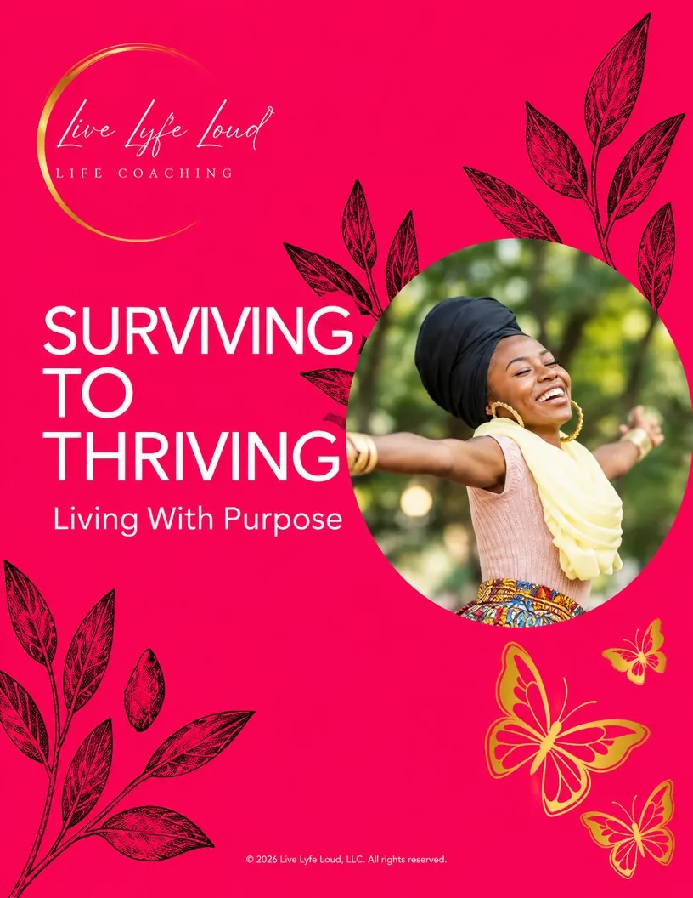

THE WORKSHOP WORKBOOK
Surviving
to Thriving.
Living with purpose
This workbook accompanies the Surviving to Thriving workshop. Use it to capture what stands out, reflect honestly, and turn insight into intentional action. This is your space to pause, process, and practice what you are learning.
Clinical: The 5 Stages of Change
Faith: Revelation → Surrender → Renewal → Purpose
How would you like to use your workbook?
Filling it out online? Follow along during the workshop — your answers save as you type.

Your words stay with you. Answers save on this device as you type — if your phone dies or the page refreshes, they’ll be right here when you come back on this same browser. Nothing is shared until you choose to send it.
Switching devices? Email yourself a link
SWITCHING DEVICES?
Email yourself a link
Get a link that holds your answers so far. Open it on any phone or computer to pick up right where you left off. Added more since? Just send yourself a fresh link.